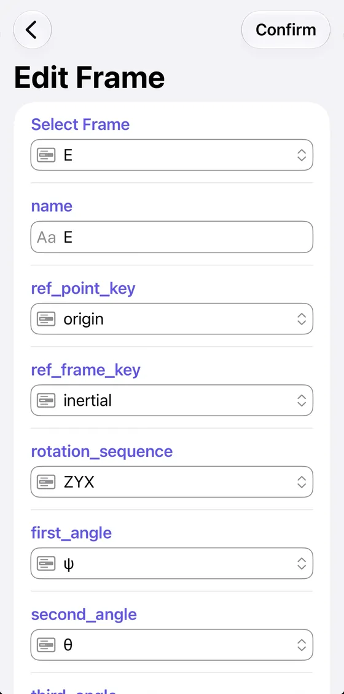
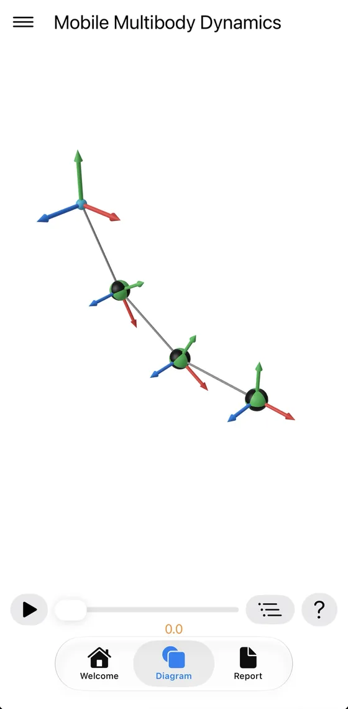

Real equations, not a black box
Unlike CAD-style tools that hide the math, MOMDYN shows every equation it derives.
Free · iOS 18+
Build a mechanism by touch, see its symbolic equations, export Python. No license required.

Unlike CAD-style tools that hide the math, MOMDYN shows every equation it derives.
The exported script runs with common free Python packages, ready for phase plots, frequency analysis or controls.

# Generate the KanesMethod object
kane = KanesMethod(inertial, q_ind=coords, u_ind=speeds, kd_eqs=kinematic_equations)
fr, frstar = kane.kanes_equations(bodies, loads)
# Generate the lambdified equation
states = coords + speeds
rhs = lambdify([t]+states, kane.rhs().subs(parameters))
def fun(t, x):
return list(rhs(t, *x)[:, 0])
# Simulate and plot
initial_conditions = list(initial_coords.values()) + list(initial_speeds.values())
sol = solve_ivp(fun, tspan, initial_conditions, first_step=first_step, rtol=tol)
plt.plot(sol.t, sol.y.transpose())
plt.xlabel("Time [sec]")
plt.ylabel("State")
plt.legend([str(state) for state in states])
plt.savefig("states.png")


Frames, joints, bodies and loads, by touch.
One tap derives them and runs the simulation.

Orbit, pan, zoom and scrub the timeline.
Take your model to the desktop.
See the equations behind every motion.
A live demo tool for class, with free tutorials.
Test an idea on your phone first.
Yes, free on the App Store.
iPhone and iPad, iOS/iPadOS 18 or later.
No. The app derives and simulates on the device. Python export is optional, for desktop analysis.
Yes. The documentation and the pendulum and oscillator tutorials are free to link from your course page.
It is an accessible entry point that shows the math, not a replacement for full-scale tools.
The app has no accounts, ads or analytics, and your models stay on your device. Details are in the privacy policy.

Free · iOS 18+